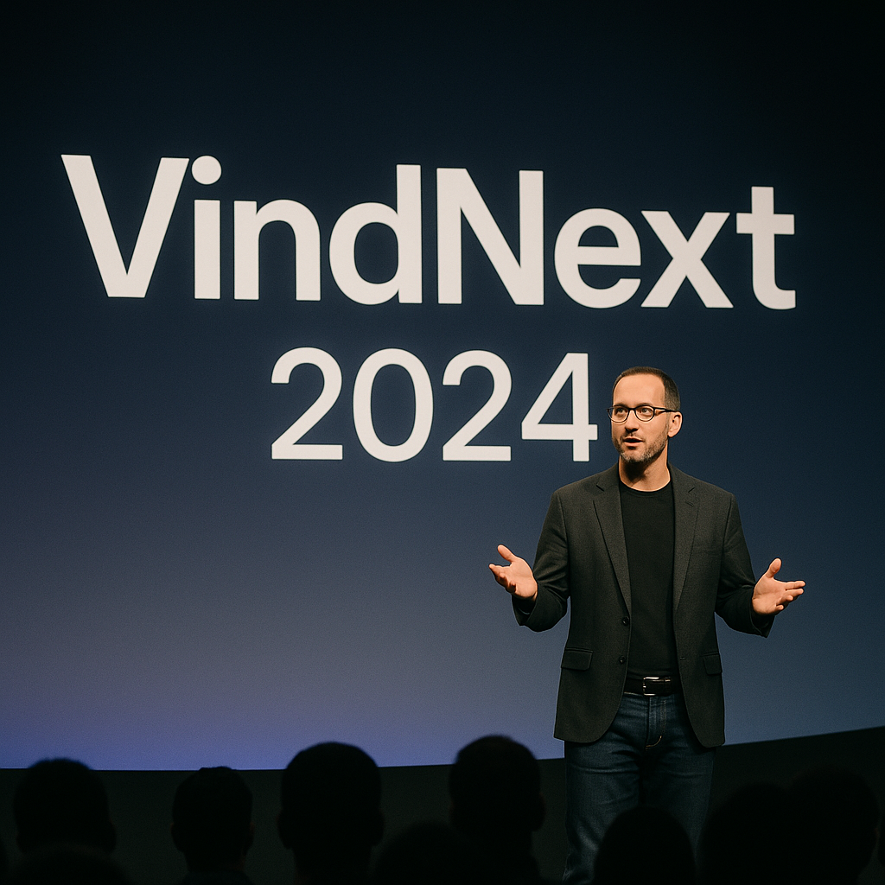

VindNext 2025 is the latest edition of dockVind's premier tech showcase event. Set to unveil
cutting-edge innovations, the conference offers an exclusive look into dockVind's upcoming
technologies. Industry leaders, developers, and enthusiasts will converge for keynotes, live demos,
and hands-on experiences. This year's theme centers around intelligent automation and human-centric
design. Join us to witness the future.
DVDC 2025
DVDC 2025 is dockVind's annual developer conference, bringing together creators, engineers, and
innovators from around the globe. As the cornerstone event for dockVind's platforms and tools, DVDC
offers deep dives, technical sessions, and early access to upcoming APIs and SDKs. This year's
edition will continue its tradition of previewing key announcements ahead of VindNext 2025.
Attendees can expect hands-on labs, expert panels, and a first look at the future of dockVind
development. Whether you're building for today or tomorrow, DVDC 2025 is where it begins.
Past Events
VindNext 2024
VindNext 2024 marked a bold leap forward in dockVind's vision for the future of technology. Focused
on ambient computing and unified experiences, the conference unveiled a new wave of smart, adaptive
tools built to transform everyday interaction. With immersive demos, thought-provoking keynotes, and
product reveals, VindNext 2024 set the stage for a more seamless, connected digital world. From
platform evolution to ecosystem expansion, it showcased the innovations that would define the coming
year. As always, VindNext was dockVind's statement on what comes next.

DVDC 2024
DVDC 2024 brought developers into the heart of dockVind's innovation engine. With hands-on previews
of new frameworks, toolkits, and platform integrations, the conference empowered creators to build
smarter, faster, and more intuitively. From technical deep dives to community-led sessions, DVDC
2024 gave attendees an early glimpse of the technologies that would later take center stage at
VindNext. It served as both a launchpad for new ideas and a collaborative space for developers
shaping the future of dockVind's ecosystem.